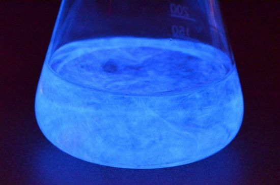

PENGERTIAN
Cairan chemiluminescence adalah larutan kimia yang menghasilkan pancaran cahaya tampak langsung dari reaksi kimia tanpa menghasilkan panas sama sekali (cold light). Cairan ini umumnya terdiri dari bahan bakar organik (seperti fenil oksalat ester atau luminol), zat pengoksidasi (hidrogen peroksida), katalis, dan zat pewarna fluoresen yang disimpan terpisah sebelum digunakan.